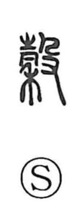

合

Uncategorized
Kun: au, awasu, awaseru | On: go, ga, katsu
to fit ・ to match ・ to agree ・ to join ・ union
Explanation
In the ancient script, 合 depicts a ritual covenant container with a lid set snugly over the mouth (a 口 vessel). This was the sacred coffer in which written prayers to the deity were placed, and the graphic focus is on lid and vessel fitting precisely together. From that concrete image arose its core sense of fitting or agreeing, then further the ideas of uniting, combining, and totaling (as in union, fusion, and addition). Because the old character 會/会 originally portrayed the bringing together of things and people—early forms even show persons seated face to face—the sphere of “meeting” also came to be embraced by 合 and its derivatives.